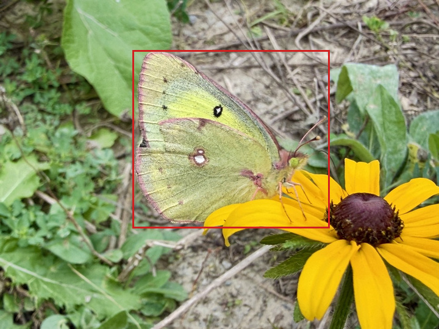
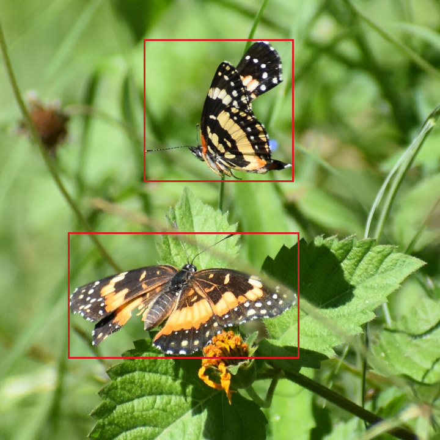

Выделяйте дневных и ночных взрослых бабочек. Каждая бабочка получает отдельную прямоугольную рамку.
В задачу входят все взрослые дневные и ночные бабочки, включая необычные формы. Не требуйте привычных широких или ярких крыльев. Осматривайте весь кадр и видимые части объекта. Примеры ниже уточняют целевой класс, а не заменяют проверку всех рамок.
Пальцекрылки тоже являются бабочками. На крупном плане видимые части взрослого объекта могут касаться всех четырех краев кадра. В таком случае одна рамка по всему кадру допустима; дополнительные маленькие рамки внутри нее не нужны.
Источник: iNaturalist, фото 751415542; CC0.

У цветка виден взрослый бражник с серыми и оранжевыми крыльями. Смаз движения не означает отсутствие объекта. Размечайте его видимые части, не достраивая невидимые.
Источник: iNaturalist, фото 753226572; CC0.

У некоторых ночных бабочек взрослая самка не имеет крыльев. Это не делает ее гусеницей или куколкой. Не отклоняйте объект только из-за отсутствия привычного силуэта; если признаков недостаточно, выбирайте "Нужен разбор" и объясняйте сомнение.
Источник: iNaturalist, фото 762629038; CC0.
О бескрылых взрослых самках: Virginia Cooperative Extension, Virginia Tech; UC IPM, University of California.
Других насекомых, гусениц, куколок и тени. Ночная взрослая бабочка со сложенными крыльями тоже входит в задачу.
Красные рамки показывают правильное выделение видимых частей бабочек.

Одна рамка охватывает видимые крылья, тело, усики и лапки. Цветок и фон не являются отдельными объектами.
Источник: iNaturalist, фото 763261515; CC0.

Здесь две взрослые бабочки, каждой нужна отдельная рамка. Тень на листе внизу справа не размечается.
Источник: iNaturalist, фото 759419722; CC0.

Выделяется вся видимая часть бабочки, включая длинный видимый усик. Скрытые цветами части не достраиваются.
Источник: iNaturalist, фото 762970417; CC0.

В кадре жук с длинными усиками. Это не бабочка. Если других взрослых бабочек в кадре нет, правильный ответ: "Бабочек нет".
Источник: iNaturalist, фото 763147293; CC0.

Осмотрите весь кадр. Здесь видны растение, листья и рука, но взрослых бабочек нет. Правильный ответ: "Бабочек нет".
Источник: iNaturalist, фото 763441012; CC0.

Гусеница не является взрослой бабочкой и не выделяется. При отсутствии взрослых бабочек ответ пустой.
Источник: iNaturalist, фото 762931036; CC0.